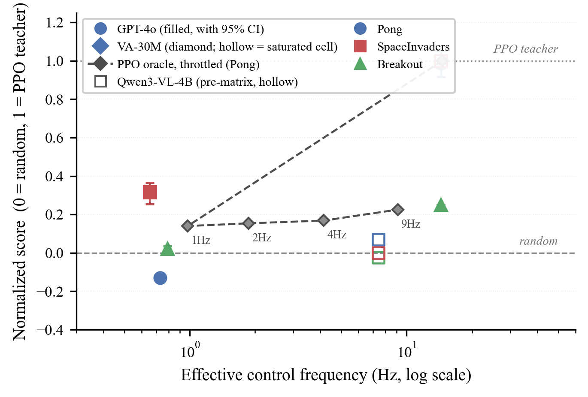
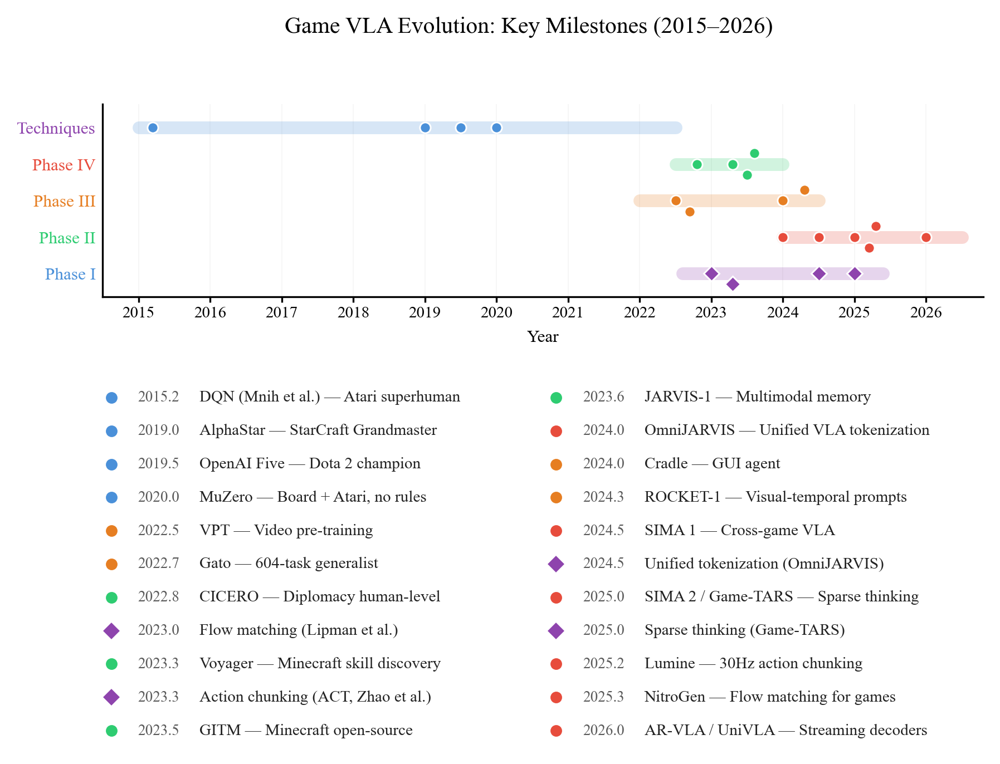
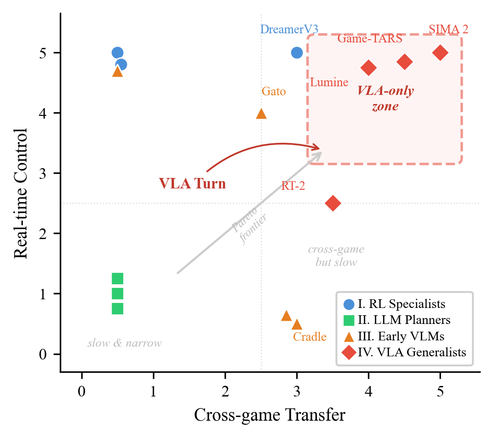

The first survey to pair every core architectural claim about game Vision-Language-Action agents with an original falsification experiment — grading the evidence, including where it is weak.
NetEase Fuxi AI SG Lab · Singapore · hengchang.hu@oc.netease.com
Four moves: locate the conflict that drives the field, measure one representative agent under a clock that actually costs latency, isolate the mechanism behind the failure, and grade every claim by the strength of its evidence.
RL Specialists → LLM Planners → Early VLMs → VLA Generalists. Each phase is an answer to the same latent conflict — intelligence versus latency — and each answer pays a different price.
Most VLM game evaluations let the emulator wait for the model. Under our real-time harness the same GPT-4o falls below random on Pong, while a 30M distilled policy holds the full 14.4 Hz cadence.
Throttle a competent PPO teacher below ∼9 Hz and it too collapses toward random. The bottleneck is stale actions, not checkpoint quality.
Every core claim is rated by evidential strength; the modality and knowing–doing pilots are marked plausible-but-unproven rather than allowed to outrun the data.
RL Specialists → LLM Planners → Early VLMs → VLA Generalists. Every phase is an answer to the same question — how to buy intelligence without paying latency — and every phase pays a different price for it.
The harness fixes wall-clock FPS and repeats each action until the next decision. Latency is not measured on the side: it costs points exactly as it does on real hardware, at 45 s per episode.
On Pong, under the same clock: the frontier VLM lands below random, while a 30M policy distilled from a competent teacher sustains the full cadence — 0.99 [0.92, 1.06] of its teacher.
Let the emulator wait for the model and the same GPT-4o never loses a point to inference time. A score without a fixed clock cannot separate latency from skill — so the protocol is part of the claim.
Throttle a competent PPO oracle below ~9 Hz and it collapses toward random on the reaction-critical titles. A label shift at human-reaction scale does the same to warm-started behavior cloning.
241 cited works, 1,327 screened papers, 30 agents in the taxonomy — each core claim paired with the experiment that could falsify it, and the exploratory pilots marked plausible-but-unproven.
We re-evaluate representative agents under one real-time protocol — fixed wall-clock FPS with stale-action repeat — on three Atari titles, pooling 3 seeds × 5 episodes per cell.

| Model | Params | Pong ↑ | SpaceInvaders ↑ | Breakout ↑ | Eff. Hz |
|---|---|---|---|---|---|
| GPT-4o (vision) | undisclosed | −21.0 ± 0.0 | 267.7 ± 38.8 | 2.0 ± 1.3 | 0.6–0.8 |
| Qwen3-VL-4B VLA (LoRA, BC)† | 4B | −16.3 | 158.3 | 0.0 | 7.4 |
| Random | — | −17.9 ± 3.3 | 158.3 ± 116.5 | 1.1 ± 0.8 | 14.9 |
| VA-30M (BC on teacher demos) | 30M | 5.1 ± 3.2 | 505.0 ± 0.0‡ | 12.0 ± 0.0§ | 14.4 |
| PPO teacher (oracle) | 1.7M | 5.5 ± 1.3 | 505.0 ± 0.0‡ | 45.0 ± 0.0§ | 14.6 |
Under a blocking protocol — the emulator waits for the model — GPT-4o scores 0.0 on all three titles, and inference latency never costs a point. Under the real-time harness the same model lands below random on Pong (−0.13 normalized) and near random on Breakout (0.02). Evaluation protocol is not a detail of the method; it is part of the claim.
The paddle below decides at the rate you pick, then repeats that decision until the next tick — the same stale-action repeat the harness applies to every agent. Hold 14.4 Hz and it stays on the ball; slide toward 1 Hz and it spends the rally aiming where the ball used to be.
Every system in the taxonomy is scored on the same interface commitments: backbone, input modality, reasoning, action space, control policy, and latency. Select a phase.

Source: taxonomy/taxonomy.json · rendered from the paper's own data file.
Scored by the author from evidence reported in the original publications (0–5, protocol in the appendix), backing 84 evidence records shipped in the repository. The paradigm comparison in the paper is a qualitative design space built on these scores — not a measured result.
| Agent | Phase | Generalization | Real-time | Language | Perception | Training eff. | Transfer | Overall |
|---|

The survey screened 2,785 candidates and retained 1,327 papers — every one reviewed and tagged by paradigm phase, quality tier, method, and venue. Search them right here, or open the full catalog for filters and sorting.
Loading the catalog…
Found a missing paper, a wrong venue, or a phase tag that looks off? Corrections are welcome by email, or as an issue once the repository is public.
Code, data, and artifacts are released together: the real-time harness, the taxonomy, the catalog, and the full rubric evidence — negative findings included.
Code and data are released with the paper — the repository links above go live at that point.
@article{hu2026planning,
title = {Planning to Playing: A Diagnostic Survey of the
{VLA} Turn in Game Agents},
author = {Hu, Hengchang},
journal = {arXiv preprint},
year = {2026}
}A machine-readable CITATION.cff is included in the repository.
{kind=link}
{kind=link}
{kind=link}